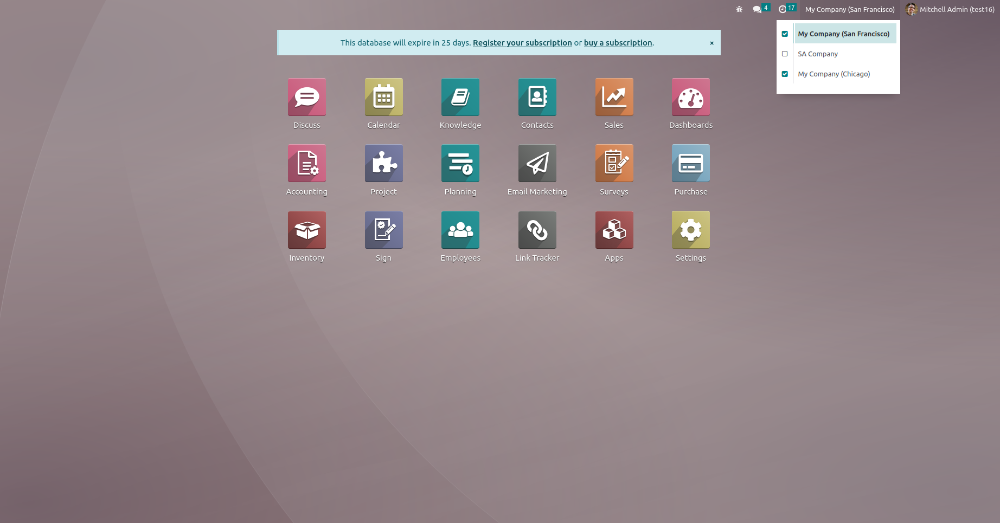
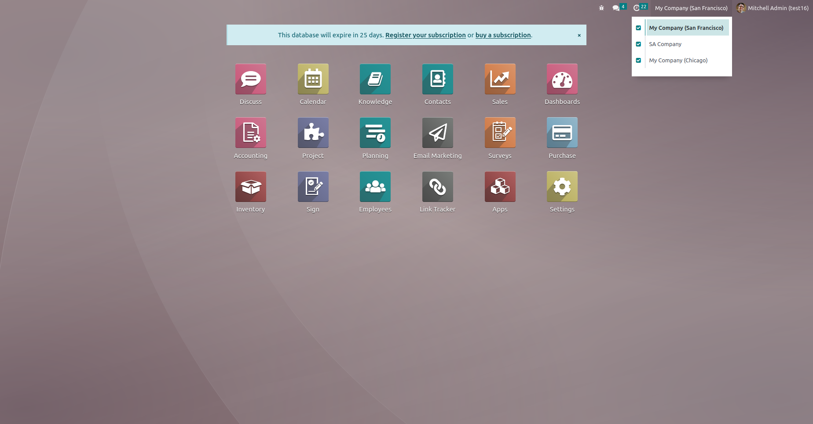
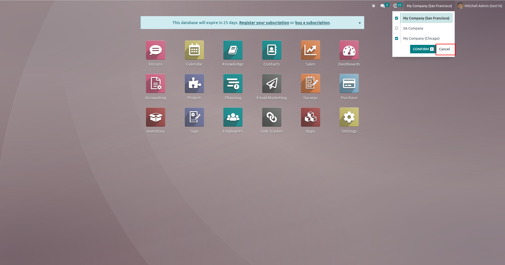
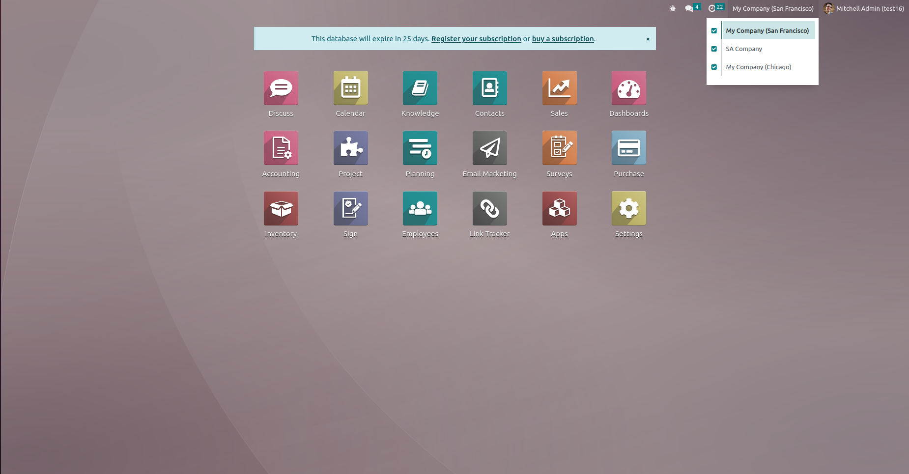

1. Systray multi-company picker — select multiple companies.
2. Confirm button — apply buffered selection only when you click Confirm.

3. Companies updated — UI reflects applied changes.

4. Cancel button — reset any unconfirmed toggles safely.

5. No accidental changes — your current companies remain untouched until confirmation.
Ideal for users who work across multiple companies and need a predictable way to change which companies are visible in the UI. This module is non-invasive — it patches the systray menu and adds confirm/cancel UX without global layout changes.